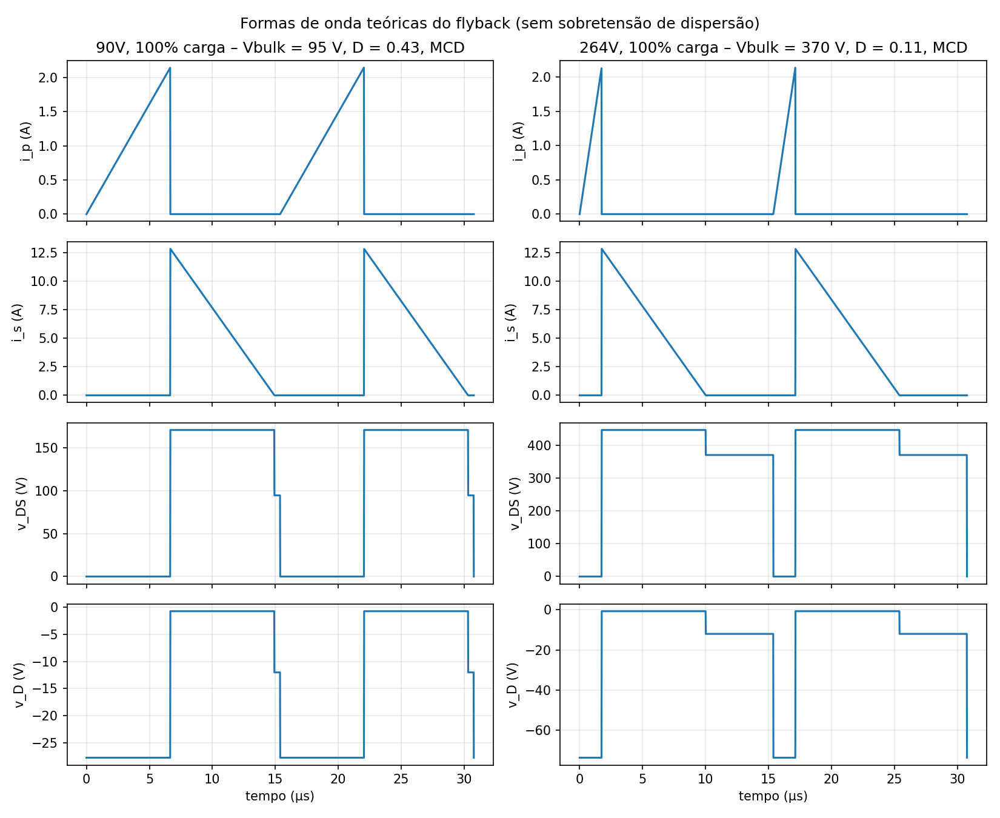
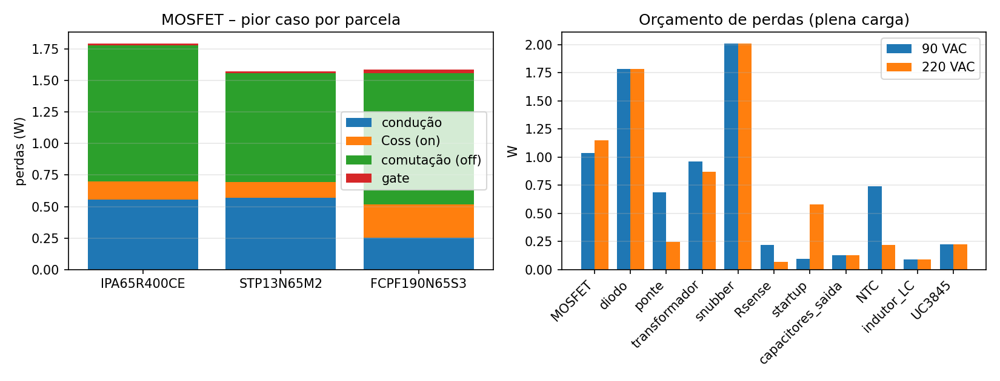
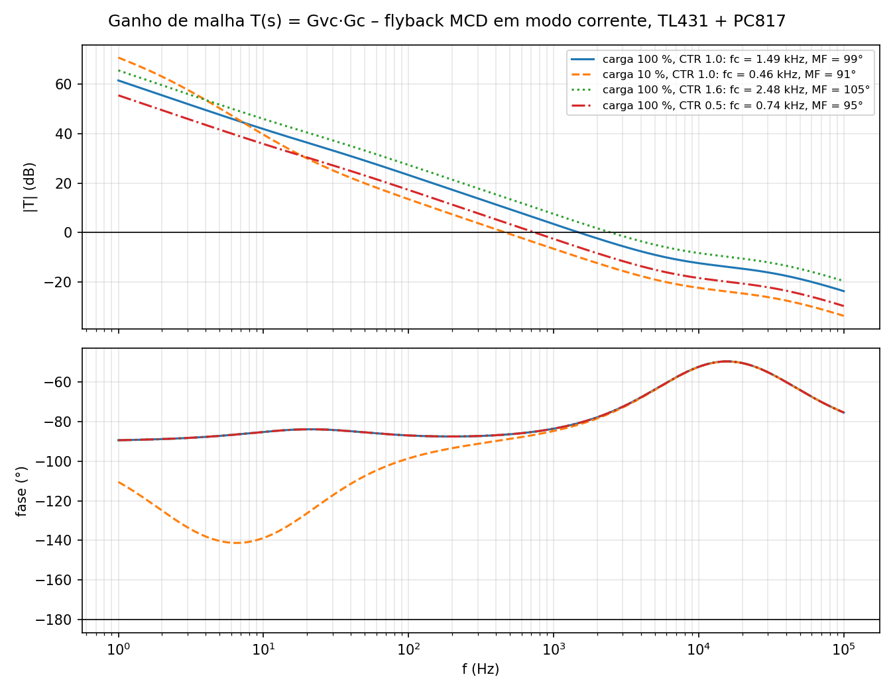
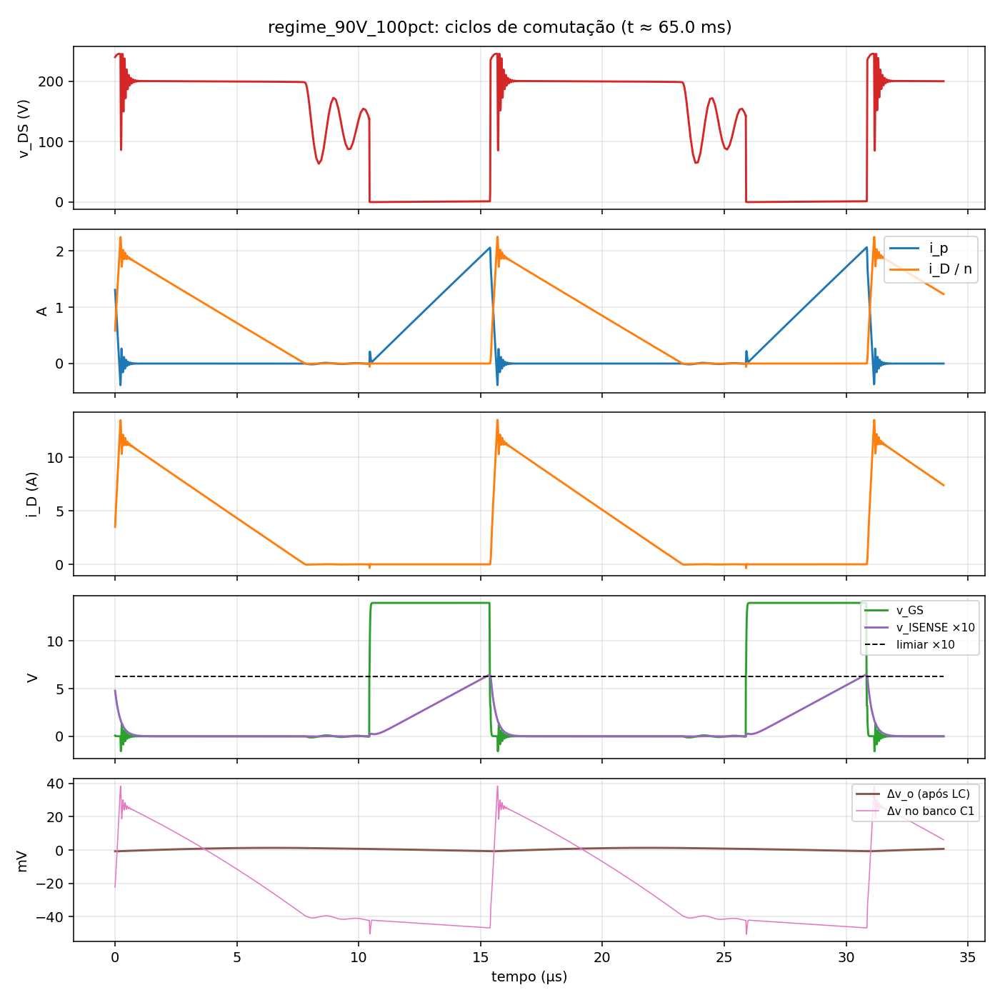
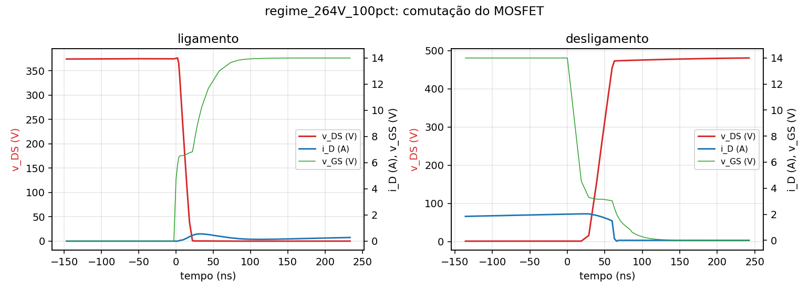
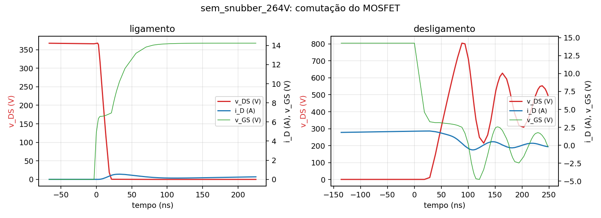
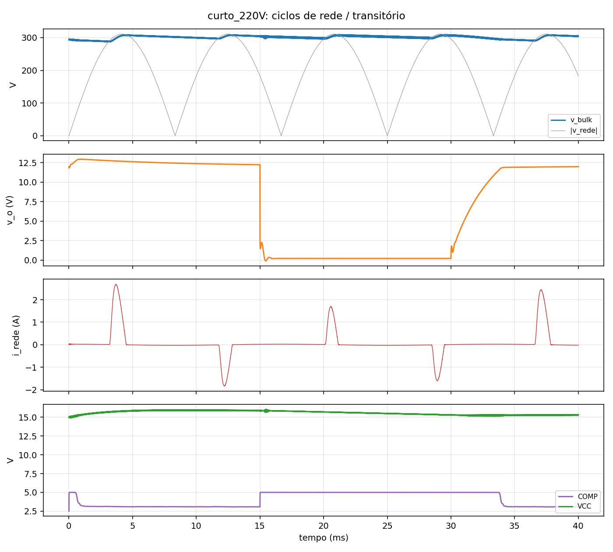
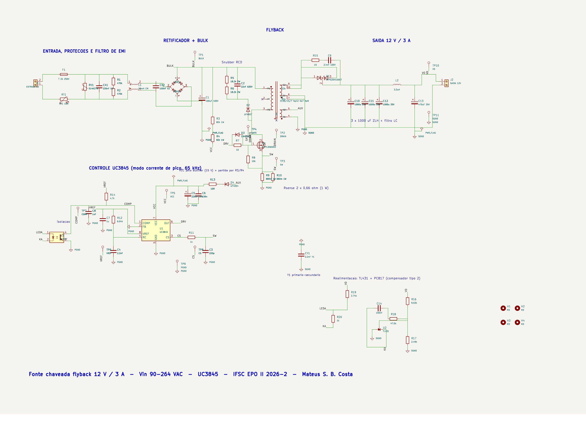
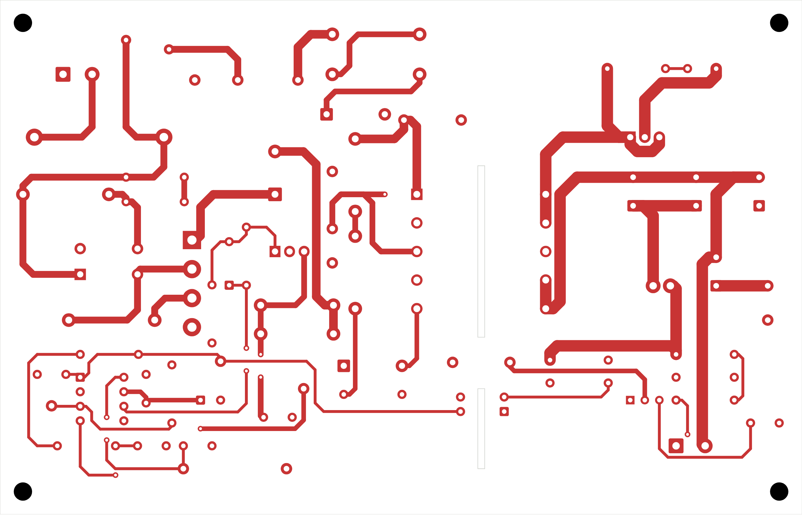
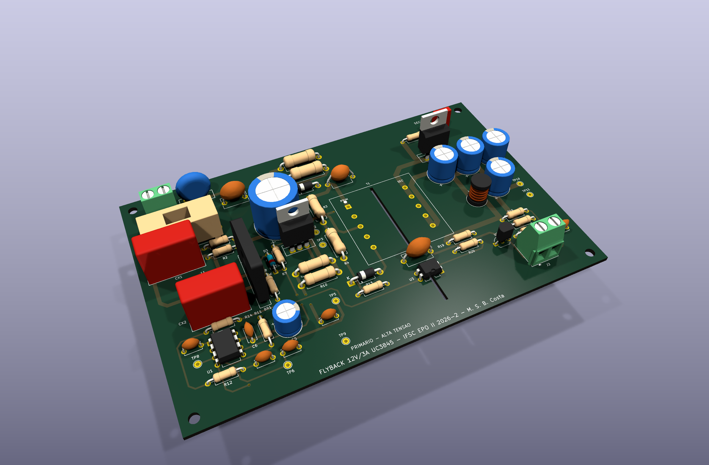

Projeto Semestral – Tema II · Eletrônica de Potência II (2026-2)
Mateus Salgado Barboza Costa · Prof. Joabel Moia · IFSC – Engenharia Eletrônica
Apresentação: 21/12/2026
| Bloco | Escolha |
|---|---|
| Proteções | Fusível T2A, NTC 10 Ω, varistor S14K275 |
| EMI | X2 220 nF + choke MC 10 mH + X2 100 nF, Y1 2,2 nF |
| Retificador | GBU4J + 100 µF/400 V |
| Flyback | STP13N65M2, E-30/7 (42:7:9), 65 kHz, MCD |
| Snubber | RCD 9,1 kΩ / 22 nF / UF4007 |
| Saída | STPS20H100CT, 3 × 1000 µF ZLH + LC 3,3 µH/470 µF |
| Controle | UC3845 modo corrente de pico, TL431 + PC817 |
| Núcleo | AeAw | lg | Np/Ns/Naux | P (W) | ΔT | Kocup |
|---|---|---|---|---|---|---|
| E-30/7 | 0,48 | 0,45 mm | 42 / 7 / 9 | 0,96 | 29 °C | 0,46 |
| E-30/14 | 1,02 | 0,23 mm | 21 / 3 / 4 | 1,42 | 32 °C | 0,22 |
| E-42/15 | 2,84 | 0,15 mm | 14 / 2 / 3 | 2,79 | 44 °C | 0,08 |

| MOSFET 650 V | P 90 V | P 264 V | RθJC | Tj |
|---|---|---|---|---|
| IPA65R400CE | 1,14 W | 1,38 W | 4,0 | 79 °C |
| STP13N65M2 | 1,04 W | 1,15 W | 1,14 | 69 °C |
| FCPF190N65S3 | 0,83 W | 1,40 W | 3,5 | 79 °C |




Modelo comportamental do UC3845 (oscilador, latch 50 %, comparador 1 V, UVLO), VDMOS do STP13N65M2, Llk e RSE explícitas; 12 pontos de regime + 8 casos especiais.
| Vac (100 %) | Vo (V) | Ip teo / sim (A) | Is,pk teo / sim (A) | Is,rms teo / sim (A) | Vds teo / sim (V) | η teo / sim (%) |
|---|---|---|---|---|---|---|
| 90 | 12,07 | 2,14 / 2,07 (−3,6 %) | 12,9 / 13,6 (+5,7 %) | 5,45 / 4,89 (−10 %) | 261 / 246 (−6 %) | 81,9 / 83,3 |
| 127 | 12,08 | 2,14 / 2,07 | 12,9 / 13,5 | 5,45 / 4,88 | 314 / 296 | 82,9 / 85,2 |
| 220 | 12,08 | 2,14 / 2,07 | 12,9 / 13,4 | 5,45 / 4,88 | 445 / 422 | 83,0 / 85,5 |
| 264 | 12,08 | 2,14 / 2,07 | 12,9 / 13,3 | 5,45 / 4,88 | 507 / 482 (−5 %) | 82,7 / 84,8 |





| Bloco | US$ (1 un.) | US$ (100 un.) | % |
|---|---|---|---|
| PCI (lote de 5 / 100) | 9,60 | 1,90 | 24 |
| Secundário | 5,05 | 3,14 | 13 |
| Filtro EMI | 4,51 | 2,97 | 11 |
| Transformador | 4,50 | 3,00 | 11 |
| Potência primária | 3,30 | 2,21 | 8 |
| Demais (entrada, bulk, controle, realim., snubber, mecânica) | 12,82 | 7,41 | 32 |
| Total por fonte | 39,78 (R$ 219) | 20,63 (R$ 113) | 100 |
Obrigado. Arquivos: PROJETO/ (scripts, LTspice, KiCad, Gerbers, BOM, relatório)